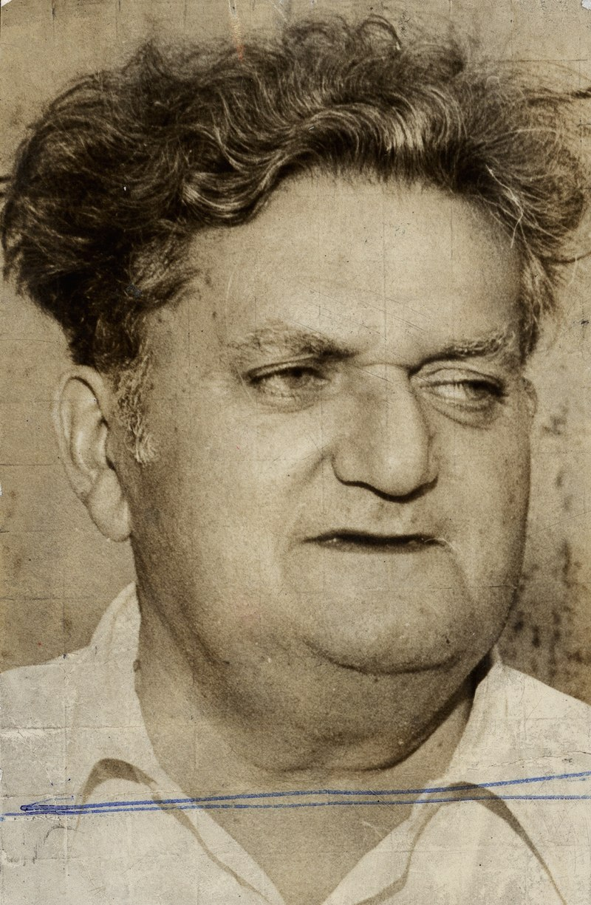

Luís da Câmara Cascudo (Natal, 30 de dezembro de 1898 – 30 de julho de 1986) foi um historiador, sociólogo, musicólogo, antropólogo, etnógrafo, folclorista, poeta, cronista, professor, advogado, jornalista e escritor brasileiro. Passou toda a sua vida em Natal e dedicou-se ao estudo do folclore e da cultura brasileira. Foi professor da Faculdade de Direito de Natal, hoje Curso de Direito da Universidade Federal do Rio Grande do Norte (UFRN), cujo Instituto de Antropologia leva seu nome. Deixou obra volumosa e de grande relevância, em particular sobre história, folclore e cultura popular. Recebeu o Prêmio Machado de Assis pela Academia Brasileira de Letras, em 1956, pelo conjunto de sua obra.
Câmara Cascudo nasceu em Natal, capital do Rio Grande do Norte no ano de 1898. Era filho de Francisco Justino de Oliveira Cascudo e de Ana Maria da Câmara, e devido a uma saúde frágil iniciou o hábito da leitura muito cedo.
Sua família era influente na região de Campo Grande, no interior do estado, e tinha uma tradicional ligação com a política. Seu avô materno, Manoel Fernandes Pimenta, foi um rico fazendeiro e senhor de escravos. O avô paterno, Antônio Justino de Oliveira, havia sido um devotado membro do Partido Conservador, que na época representava a aristocracia rural, e por tal associação recebera o apelido de "o Velho Cascudo", que na geração seguinte foi incorporado ao sobrenome familiar. O pai, Francisco Justino, foi tenente da Guarda Nacional e delegado de polícia em Caicó, e na década de 1890 fixou-se em Natal, onde elegeu-se deputado e por algum tempo foi o mais abastado comerciante da cidade, além de presidente da Associação dos Comerciantes. Sua casa era um ponto de encontro de personalidades da cultura, das artes e da política
Fez os estudos secundários no Colégio Atheneu. Em 1920 escreveu as notas e a introdução da antologia poética de Lourival Açucena intitulada Versos reunidos. No ano seguinte publicou sua primeira obra autoral, o volume de críticas literárias Alma patrícia. Na mesma época iniciou o curso de Medicina na Faculdade de Medicina da Bahia, porém não o concluiu. Posteriormente estudou Direito a partir de 1924 na Faculdade de Direito do Recife, formando-se na instituição em 1928. O Direito não estava no centro de seus horizontes, e havia entrado neste caminho mais por pressão familiar do que por uma vocação irresistível, pois o título de bacharel era muito prestigiado social e politicamente. No mesmo ano formou-se em Etnografia na Faculdade de Filosofia do Rio Grande do Norte. Em 21 de abril de 1929 casou-se com Dália Freire, que lhe daria dois filhos, Fernando Luís e Anna Maria.
Prêmios: |
Profissões: |
Seleção Brasileira: |
| Câmara Cascudo | ||
|  | ||
| Nome: | Luís da Câmara Cascudo | |
| Data de nascimento: | 30 de dezembro de 1898 | |
| Local de nascimento: | Natal, RN-Brasil | |
| Nacionalidade: | Brasileiro | |
| Data da morte: | 30 de julho de 1986 (87 anos) | |
| Local da morte: | Natal, RN-Brasil | |
| Link video: | Câmara Cascudo!!! | |